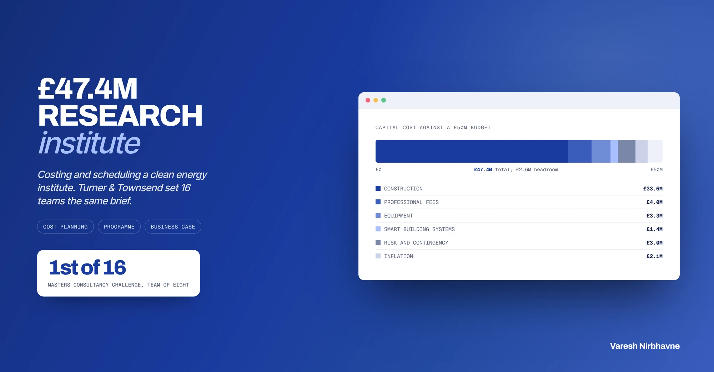

Costing and scheduling a £47.4M research institute
Turner & Townsend set 16 teams the same brief. Our team of eight proposed a clean energy and advanced manufacturing institute at £47.4M against a £50M budget, with a five phase delivery plan. We placed first.

- £47.4Mtotal cost against a £50M budget, £2.6M headroom
- £95M to £105M30 year whole life cost, about twice capital
- 1stof 16 teams on the same brief
The question
Turner & Townsend, the global construction and infrastructure consultancy, set sixteen teams the same brief: propose something the University of Birmingham could actually build, run and justify, against an indicative budget of £50M.
What I did
- Owned the delivery programme and phasing: five phases over 36 to 42 months, benchmarked against two comparable UK facilities.
- Built the competitor and benchmark comparison.
- Produced the nineteen slide pitch deck.
- Worked as one of a team of eight on the wider business case. The cost analysis on this page is the team's work.
What I found
- Total project cost came in at £47.4M against the £50M budget, leaving £2.6M of headroom. We treated that as a deliberate output, so one bad tender cannot break the case.
- Whole life cost over thirty years lands at £95M to £105M, roughly twice the capital cost. Running the building costs more than building it.
- Revenue is a range, not a point. At the top of every range the institute approaches operational break even. At the bottom it needs roughly £0.5M to £1M a year of university subsidy.
- The team placed first of sixteen.
What we proposed
An Advanced Manufacturing and Clean Energy Institute: a net zero systems integration and scale up centre.
The gap it targets is the one between a technology that works in a lab and one a manufacturer will buy, often called the valley of death. In technology readiness terms that is levels four to seven, where university funding has usually run out and commercial investment has not yet arrived.
Three missions:
- Battery and clean energy scale up, including thermal management verification.
- Circular manufacturing and battery recycling.
- Digital infrastructure and digital twins.
The cost case
Total project cost came in at £47.4M against the £50M indicative budget, leaving £2.6M of headroom. A business case that spends the entire budget leaves the client no room to absorb a single bad tender.
| Capital line | Cost |
|---|---|
| Construction | £33.6M |
| Professional fees | £4.0M |
| Equipment | £3.3M |
| Smart building systems | £1.4M |
| Risk and contingency | £3.0M |
| Inflation | £2.1M |
| Total | £47.4M |
Construction was priced at £4,500 to £6,000 per square metre gross, with a 150 seat seminar theatre included in the brief for the facility.
The number that changes the decision
Capital cost is the number everyone looks at. It is not the number that decides whether a building like this survives. Whole life cost over thirty years lands at £95M to £105M, roughly twice the capital cost.
| Annual operating cost | Amount |
|---|---|
| Low case | £1.2M |
| Baseline | £1.47M |
| High energy stress case | £2.1M |
The stress case is the one worth sitting with. At £2.1M a year, the thirty year cost rises by £18.9M undiscounted. A facility built around energy intensive battery and thermal testing is exposed to energy prices in a way a standard teaching building is not, so we modelled that exposure instead of assuming the baseline.
Can it pay for itself?
Four revenue streams, each as a range rather than a point estimate.
| Stream | Annual range |
|---|---|
| Industrial access and testing fees | £0.3M to £0.5M |
| UKRI and Innovate UK funding | £0.5M to £1.5M |
| Training fees | £0.1M to £0.2M |
| IP licensing | £0.1M to £0.5M |
At the top of every range the institute approaches operational break even. At the bottom it needs roughly £0.5M to £1M a year of university subsidy.
The case shows both ends rather than the midpoint. A single blended figure would have hidden the fact that the whole case rests on the UKRI and Innovate UK stream, which is the one the university controls least.
Where to put it
Three locations were assessed: the Birmingham Knowledge Quarter, carrying £9M of West Midlands Investment Zone funding, Tyseley Energy Park, and Ansty Park.
We recommended the campus site adjacent to TLB, with a contingency site beside G4. Proximity to existing university research capacity outweighed the funding attached to the alternative, and naming a fallback site meant the programme did not stall if the first option became unavailable.
The delivery programme
Thirty six to forty two months, in five phases.
| Phase | Months | What happens |
|---|---|---|
| Phase 0 | 0 to 6 | Outline business case |
| Phase 1 | 6 to 12 | Full business case and tender |
| Phase 2 | 12 to 30 | Design and construction |
| Phase 3 | 30 to 36 | Commissioning |
| Phase 4 | 36 onwards | Phased opening, Mission 1 first |
Opening in phases rather than all at once means Mission 1 starts generating industrial access revenue while the other two are still being commissioned. It brings the first income forward against a cost base that begins the day the building is handed over.
The duration was benchmarked against two comparable UK facilities, the High Temperature Research Centre and the UK Battery Industrialisation Centre, rather than asserted from nothing.
Procurement
A two stage Competitive Flexible Procedure: a pre construction services agreement first, then an NEC4 Option C target price contract.
Option C shares cost savings and overruns between client and contractor through a pain and gain mechanism. For a building with specialist testing equipment and a real chance of scope change during design, that beats a fixed price contract that gets repriced every time the specification moves.
Risk and sustainability
A ten entry risk register, and a stakeholder power and interest matrix covering the university, industry partners, funders and the local authority.
On sustainability the facility targets BREEAM Excellent and net zero operations. That is not decoration on a clean energy institute: a building that misses it undermines the thing it exists to research.
Limits
- The costs rest on benchmark rates per square metre, not tendered prices. Real tenders move.
- The revenue figures are ranges built on comparable facilities, not signed agreements.
- Nothing was built. This is a business case assessed as coursework, not a delivered project.
About this project
A team of eight, set by Turner & Townsend for the University of Birmingham Masters Consultancy Challenge, where 16 teams competed. This is a business case assessed as coursework, not a delivered project, and it is not affiliated with or endorsed by Turner & Townsend.
- Masters Consultancy Challenge
- University of Birmingham
- Turner & Townsend
- Cost planning
- Programme planning
- Business case